weex 学习(二) --- weexpack打包weex项目为apk时错误汇总
在写完weex项目后，将项目变成一个native应用。在这里使用weexpack，这个打包工具帮助没有android开发经验的前端开发者迅速打包，打包过程参见如何用weexpack创建weex项目并构建app,但是整个过程极易出错，所以记录了我整个过程中的错误，但是大家有问题先看Issues。
- 安装 android studio 时配置系统变量path 到 gradle 下的bin 目录。
- 配置环境变量
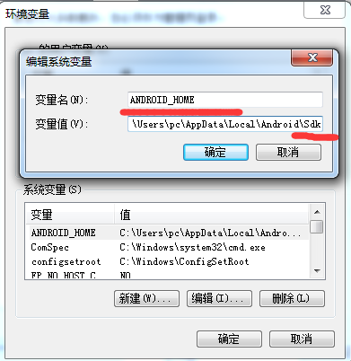
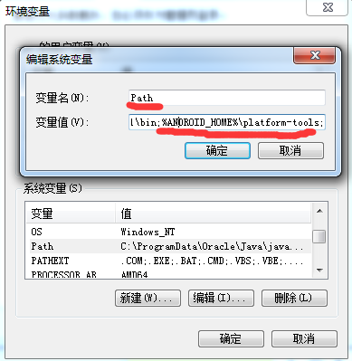
path 增加变量值是%ANDROID_HOME%\platform-tools;%ANDROID_HOME%\tools; （注意有分号分隔，并且都是英文符号） 用android studio 新建一个工程时，在初始化界面 要在project stucture 时配置sdk 路径，这个路径要一直配置到Android\Sdk 这个目录
编译时遇到错误
解决办法： Android Studio实践运用中遇到问题总结weexpack init projectName时 遇到语法错误
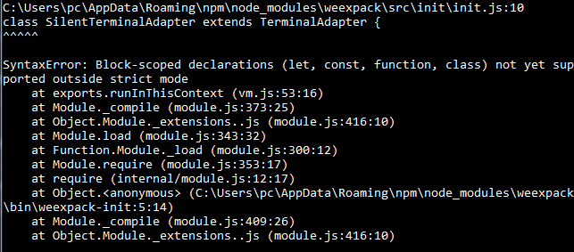
解决办法:升级 node 版本到>=6.0运行weexpack run Android 检测不到设备
检测不到手机的原因是 在安卓上并未信任手机，你可以看一下这个链接
Android: Android Studio检测不到手机设备
在设置了这些之后 ，若是还是检测不到手机，你可以在手机上的开发者选项-> 选择调试应用-> 调试应用：weex 然后重新运行 weexpack run android ，这样就可以了。
weexpack run android出错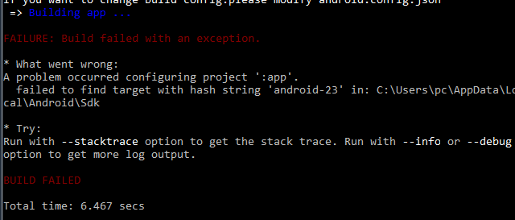
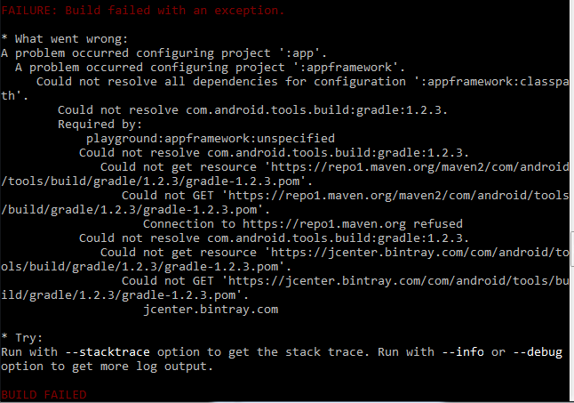
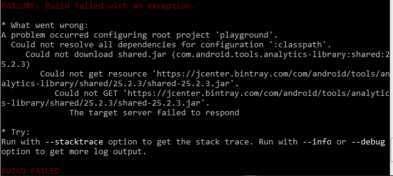
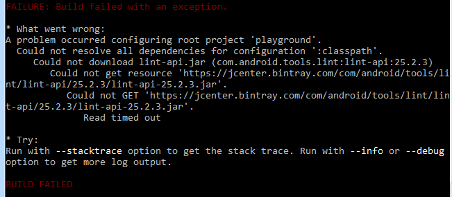
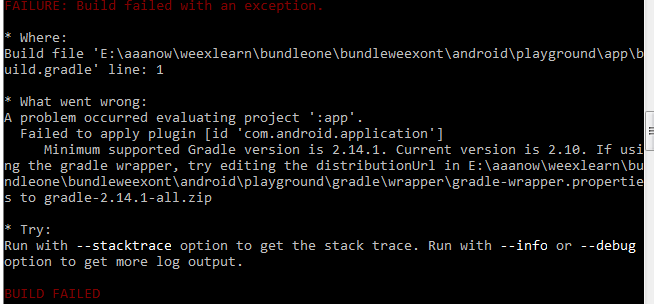
按照提示更改了gradle-wrapper.properties 文件下的distributionUrl=https\://services.gradle.org/distributions/gradle-2.14.1-all.zip
然后重新运行weexpack run android注意： 最重要的是 网要好！整个过程需要下载很多东西，若是网不好，一天也别想编译成功。
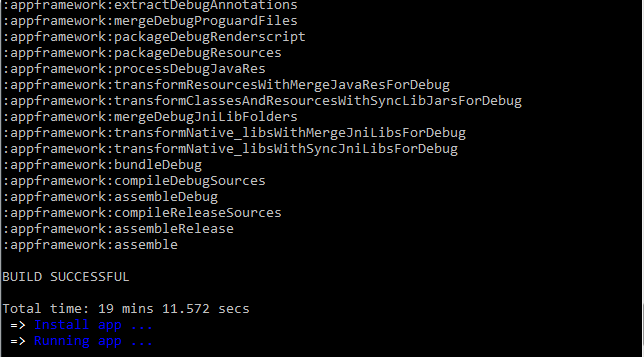这只是打包成功了，但是在android手机上运行可能会出现下面的错误，
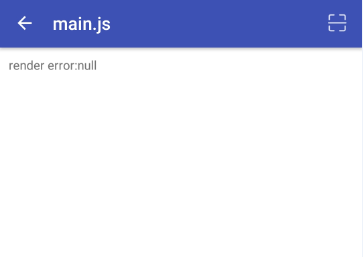
出现这样的情况，原因多是出现在js代码部分，可能是引入了不能用的模块，也可能是代码某些部分本身是有错误的。使用weexpack 打包时容易出现的错误是将自己的代码放在src 目录后，如果依赖了其他的包而在weex init 下的package.json中忘记添加依赖的包，则自己依赖的包就不会install，这样就容易出错。
代码功能调通后，就是修改代码的logo和文字。
在 Android Studio 中打开用weexpack 打包的android/playground/app/main/src/AndroidManifest.xml 文件
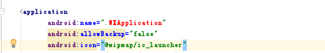
在android/playground/app/main/src/res/下面增加一个目录放入自己的logo,
在icon字段输入自己的logo名字，这里注意logo 名字 是英文小写、数字、或下划线,不能是汉字或者大写字母。
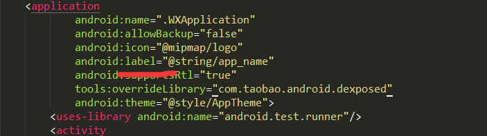
在android/playground/app/main/src/res/values下面修改自己的logo String.最后是apk的位置：android/playground/app/build/outputs/apk/playground.apk
这个 playground 用Android Studio 也是可以打开运行的，若是中间编译或者运行出错，可以先 clear project去掉头部导航条

将 WXPageActivity.java 文件下的这段代码注释掉123456Toolbar toolbar = (Toolbar) findViewById(R.id.toolbar);setSupportActionBar(toolbar);ActionBar actionBar = getSupportActionBar();actionBar.setDisplayHomeAsUpEnabled(true);actionBar.setTitle(mUri.toString().substring(mUri.toString().lastIndexOf(File.separator) + 1));
总结
出错了总是有原因的，不要着急，肯定是有什么你不知道的地方，不可能有无缘无故的bug。^^